Finding structure in messy business data, then deciding whether to trust it.
Tepper's MBA data mining course, which I have taught six times since 2023. It covers clustering, PCA, regression, classification, forecasting, and text, with labs in Python, and it keeps asking what each model is for. Labs are in Python. The goal is not a long list of algorithms. It is a workflow students can apply to an unfamiliar dataset the week after the course ends.
Week by week
Fall 2025, Mini 2 · Tuesdays and Thursdays. Scroll the schedule and the slides follow along: five from each session, picked from the decks I taught from.
Module 1
Course overview and data exploration in PythonOpens with a case from my own work: predicting drug price spikes for a hospital system
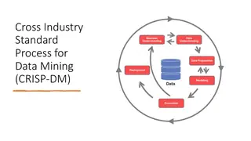
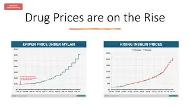
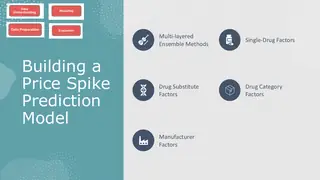
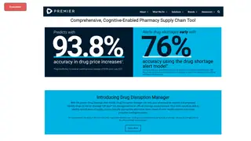
Module 1
Data exploration and visualization in Python
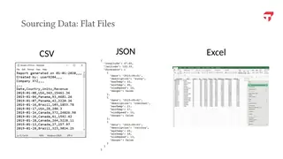
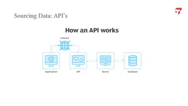
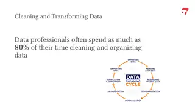
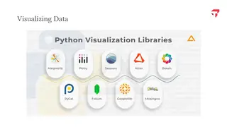
Module 2
Clustering theory and methods
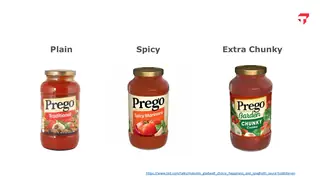
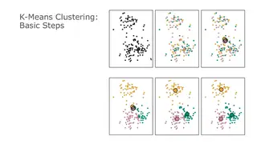
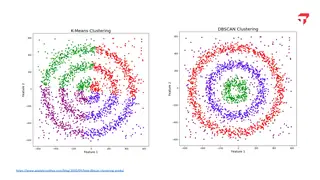
Module 2
Clustering labIn-class exercise
Module 3
No class: Election DayNo class
Module 3
Principal component analysis
Module 4
Regression theory and methods
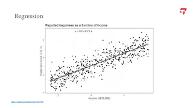
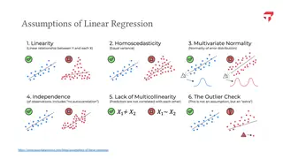
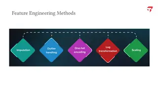
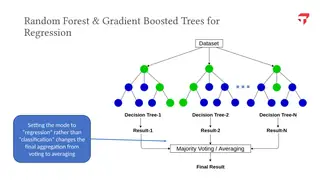
Module 4
Regression labIn-class exercise
Module 5
Classification theory and methodsFlipped and on Zoom that week, using the online hybrid lecture, while I taught at CMU Qatar
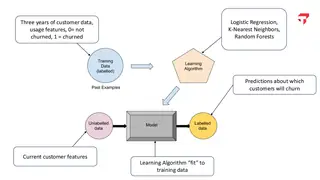
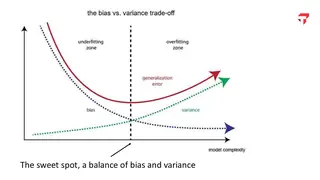
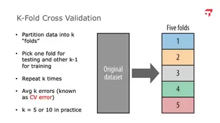
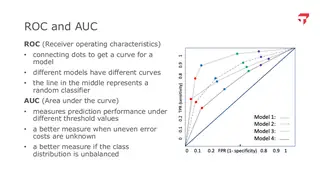
Module 5
Classification labIn-class exercise
Module 6
Forecasting with time series data
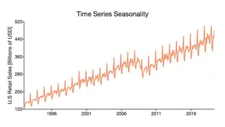
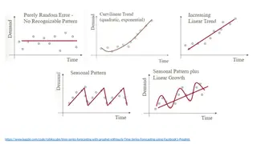
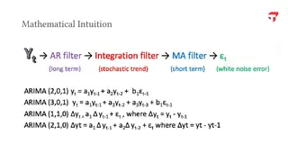
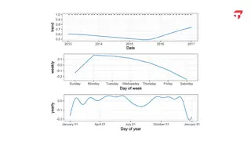
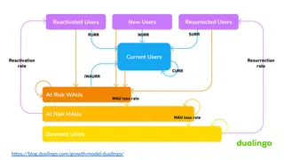
Module 6
No class: ThanksgivingNo class
Module 7
Natural language processing theory and methods
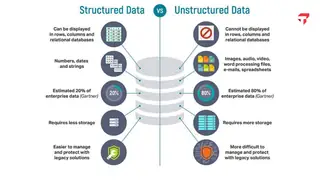
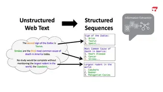
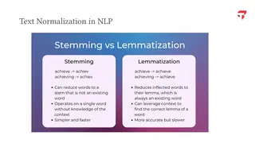
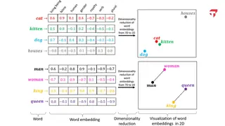
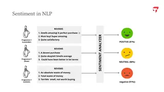
Module 7
Natural language processing labIn-class exercise
Module 8
Neural networks and large language modelsFinal group project due December 13
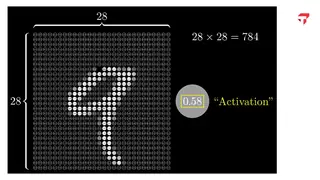
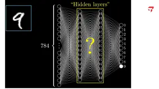
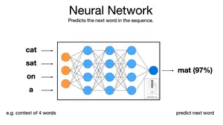
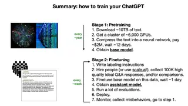
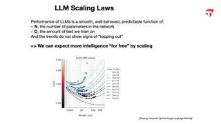
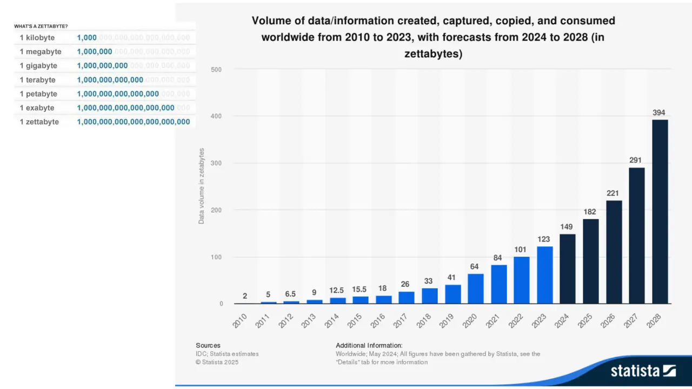
Tue, Oct 21Course overview and data exploration in PythonData created worldwide each year, in zettabytes, 2010 to 2028
Major assignments
Final project30%
Teams of up to three bring their own business question and data, public or from their own workplace, and answer it with a method from the course. After a one-page proposal they hand in either an 8 to 10 minute recorded presentation or an 8 to 10 page report, with the analysis files.
Clustering projectProjects 40%
Segment a bank's credit card customers with K-means, using at least two methods to choose the number of clusters, then with hierarchical clustering or DBSCAN. The deliverable is a 5 to 10 page report that names the segments and recommends products and marketing for each, plus the Python notebook.
Classification project
Built on the Harvard case Retention Modeling at Scholastic Travel Company: predict which customers will book again. Teams tune KNN, a tree ensemble, and a third method of their choice, compare them on accuracy, precision, recall, and AUC, make three to five recommendations, and score an unlabeled holdout file that I grade against the true labels.
Minilabs10%
Three short individual labs with starter code, each one to two hours and graded on completion: pandas on avocado prices and sales, random forest prediction of house sale prices, and sentiment and topic analysis of e-commerce and hotel reviews, including spotting fake ones.
Quizzes20%
Six open-book Canvas quizzes on the week's lectures and readings, three attempts each, lowest score dropped.
In-class exercisesUp to 20% bonus
Exercises in class earn bonus points that shift weight away from the projects.
How the course works
The course is organized around business questions, not algorithms. Each module opens with one a manager would ask: which customers look alike, what a house will sell for, who is about to leave, what customers are saying in their reviews. The first class is a case from my own work, predicting drug price spikes for a 40-hospital health system that buys $1.5 billion of pharmaceuticals a year, followed from the business question to a commercial product.
Students work the way analysts work now. Labs are in Python in Colab, generative AI is allowed, and teams hand in their AI chat transcripts with the work. The classification project is a prediction competition: every team scores a holdout file, I grade the predictions against the true labels, and the top fifth earn extra credit.
Final projects
In the final project, teams bring their own business question and data, often from their own employer, and answer it with a method from the course. Projects from Spring 2024, Fall 2024, and Spring 2025, grouped by type, with one example each.
Finance, markets, and credit risk6
Do a CEO's posts move an electric carmaker's stock price?
Sports analytics5
Predicting baseball Hall of Fame induction from career statistics
Healthcare and wellbeing5
Does wearing a fitness tracker go with better health?
Customer segmentation and retail4
Segmenting 85 grocery stores by their department sales mix
Transportation and mobility4
Where should Pennsylvania put new EV chargers?
Churn, retention, and satisfaction3
Predicting and segmenting airline passenger satisfaction
Real estate and places3
What drives Airbnb nightly prices in New York?
Economic forecasting2
Forecasting US retail sales with Prophet
Media and entertainment2
What predicts a song's stream count?
Every project, by term.
Spring 2025 19 projects
Tech company trajectories through the COVID boom and 2023 downturn. Asked whether tech companies fall into groups with similar growth-and-decline paths from 2020 to 2025. Found four clusters and used company case studies to explain which kinds of firms held up best after the post-pandemic correction. K-means clustering on merged tech-layoff data (Kaggle) and Yahoo Finance stock prices, with engineered volatility and resilience features
Credit card fraud detection. Built and compared models to flag fraudulent transactions, also looking at fraud patterns by time of day, age group, profession and geography. The team picked a neural network as its best model. Classification, random forest and neural network models on a credit card transaction dataset, with attention to class imbalance
Predicting baseball Hall of Fame induction. Modeled pitchers and hitters separately to see which traditional box-score statistics predict induction. Discussed limits such as the lack of era adjustment and voter sentiment. Logistic regression with balancing and cross-validation, plus XGBoost and SMOTE extensions, on hitter, pitcher and Hall of Fame tables
Optimizing argon gas recycling. Predicted gas recovery rate and operating time from pressure, flow rate and nitrogen concentration, and compared model forms for accuracy and smooth behavior. Linear, polynomial, logarithmic and random forest regression on experimental data from an industrial gas process
Forecasting U.S. retail sales. Forecast monthly U.S. retail sales into 2026 and showed the strong late-year seasonal peaks. Discussed where Prophet works well and suggested adding holiday and economic indicators. Time-series forecasting with Facebook Prophet on Census Bureau monthly retail trade data, evaluated by back-testing
Breast cancer diagnosis from cell measurements. Classified breast masses as benign or malignant, with attention to avoiding missed malignancies. Chose logistic regression for its strong results and interpretability, and linked the top features (such as radius and texture) to known clinical indicators. Logistic regression, random forest and XGBoost with GridSearchCV on the Wisconsin breast cancer (FNA) dataset
Regional health disparities and economic mobility in U.S. cities. Grouped U.S. cities by health outcomes and modeled which local factors predict them; gradient boosting fit best. Education, social capital and poverty stood out, with distinct patterns in the Southeast and Great Plains. K-means clustering plus LASSO, decision tree, random forest and gradient boosting on Opportunity Insights health-inequality data
Predicting first-round NFL draft picks. Predicted which prospects go in the first round from physical measurements, position and school. A random forest tuned for recall was applied to the 2025 draft class; of its 32 picks, 8 were actual first-rounders. KNN, random forest, XGBoost and neural network classifiers on NFL Combine data from 2000 to 2024, with resampling for class imbalance
Does fitness-tracker use relate to better health?. Explored activity, sleep and weight patterns and identified three user types by activity profile. Also tried predicting weight change, which was limited by sparse self-logged data, and made product and marketing suggestions. Exploratory analysis, K-means clustering and random forest regression on a public Kaggle dataset of 30 Fitbit users
Predicting student math performance. Predicted final math grades from early-year information to flag students who need support. Prior grades, past failures and study time were the strongest predictors, with applications for schools and tutoring services. Linear regression with one-hot encoding on a public student-performance dataset (395 students, 33 features)
Stroke risk segmentation and prediction. Segmented adults into clinically meaningful groups and predicted stroke risk, adjusting thresholds to improve recall on rare cases. Glucose, age and BMI were the top predictors, consistent with CDC guidance. K-means clustering, linear regression and random forest with threshold tuning on a public stroke dataset
College choice and graduates' financial outcomes. Clustered colleges on a few variables tied to post-graduation earnings, and both methods produced consistent clusters. Selectivity (admission rate) did not track better income outcomes; retention rates and financial aid mattered more. K-means and hierarchical clustering on U.S. Department of Education College Scorecard data
Predicting flight delays. Predicted delays from schedule, airline and airport features and found higher delay rates for evening flights and certain carriers. The team was candid that class imbalance limited the model's precision. Decision tree classifier with time-of-day binning and threshold adjustment on a sample of a large U.S. flight records dataset
Predicting emergency department disposition beyond triage. Tested whether vital signs, arrival mode and return visits predict admission or critical care better than the triage level alone. Feature engineering and tuning noticeably improved recall for the high-stakes admitted and critical-care outcomes. Logistic regression and random forest with SMOTE, engineered clinical flags and SHAP interpretation on the 2022 NHAMCS national ED survey
Predicting which Solana memecoins 'graduate'. Tried to predict from early trading activity whether a new memecoin reaches graduation, a rare (1 to 2 percent) outcome. The models mostly defaulted to the majority class, and the report concluded that sequence models may suit the problem better. XGBoost, random forest and logistic regression with SMOTE and class weighting on early on-chain transaction features from Solana launchpad tokens
Predicting gold prices. Modeled gold's price, as a safe-haven asset, from related market indicators, using correlation analysis and an actual-versus-predicted comparison to show model fit. Random forest regression on historical financial and market indicators
Airline passenger satisfaction. Predicted passenger satisfaction with high accuracy and segmented passengers into groups resembling economy, business and first-class travelers, with service recommendations for each segment. Random forest classification and clustering on the Kaggle airline passenger satisfaction survey data
Credit scorecard for loan applicants. Built an interpretable model to separate good from bad loan applicants using industry-standard credit-risk methods, and validated it with ROC-AUC, Gini, KS and decile lift analysis. Logistic regression scorecard with weight-of-evidence binning and information value on Lending Club loan data
What predicts a Sweet 16 run in March Madness. Identified team stats linked to reaching the Sweet 16: win percentage helped most and turnovers hurt. Coefficient trends suggested scoring has become more important over time. Logistic regression on five seasons of NCAA team statistics
Fall 2024 14 projects
Movie success factors from IMDB and TMDB data. Analyzed how genres, keywords, directors and studios relate to audience reception and profit. Recommended fantasy-adventure themes, sequels and adaptations of novels. Clustering, regression and random forest classification on a merged IMDB/TMDB movie dataset (sampled to about 250k records)
Global fertility trends for healthcare planning. Grouped countries into four clusters with different fertility paths, from low and stable to high and declining, and suggested matching maternal-health and family policies. A polynomial fit captured the steep early decline and recent leveling better than a linear one. Clustering and linear and polynomial regression on IHME Global Burden of Disease fertility estimates, 1950 to 2019
Short-term price forecasting for the 'Magnificent 7' stocks. Built models to forecast near-term prices for seven large tech stocks and compared predicted with actual prices. Suggested adding news sentiment and macroeconomic data. Random forest versus LSTM neural network on historical daily closing prices, compared by RMSE
Predicting San Francisco 49ers wins. Found the game stats most tied to winning, including a scoring threshold around 23 points. Recommended protecting the ball, leaning on the run game and stopping opponents' rushing and third-down conversions. Logistic regression and random forest on game statistics from Pro Football Reference
Do S&P 500 sectors match how stocks actually behave?. Tested whether data-driven clusters would reproduce or improve on the official GICS sectors. The clusters were not well separated, which the team attributed to relying on price-based numeric features. K-means clustering on financial ratios and price metrics for about 490 S&P 500 companies, with random forest feature importance
What drives Airbnb prices in New York City. Identified the listing features that drive nightly price. Distance to the city center, bedrooms and bathrooms mattered most. Tree models predicted better, but the team used linear coefficients to give hosts actionable advice. Linear regression, decision tree, random forest and XGBoost on NYC Airbnb listings, with amenity and distance-to-landmark features
Loan default risk. Predicted borrower default and turned the results into four risk tiers based on income, credit utilization, credit score, debt-to-income and age, with lending and financial-literacy recommendations for each. Random forest and XGBoost on a public loan dataset with income, credit and loan variables
Predicting vehicle accidents. Built a model to predict whether an accident occurs, improving it substantially through iteration. Random forest was the final choice, with applications for insurers, logistics and ride-sharing. Decision tree, random forest and gradient boosting on a Kaggle accident dataset with weather, road and driver variables
Finding undervalued soccer players. Framed for a club's sporting director: identified the metrics that matter most for each position to spot under- and over-performing players relative to their market value. Random forest regression and K-means clustering by position on Bundesliga player statistics from FBref
Where to put new EV charging stations. Mapped zip codes where EV adoption is outpacing charging infrastructure and classified which areas need new stations. Proposed a tiered rollout starting with high-adoption, low-charger zip codes. K-means clustering plus random forest, logistic regression and XGBoost on Pennsylvania EV registrations and charging-station data by zip code
Telecom customer churn. Identified at-risk customers and the behaviors behind churn, such as heavy usage and many customer-service calls. Recommended volume discounts, better customer service and redesigned add-on plans. Random forest, decision tree, logistic regression and KNN with threshold tuning, plus clustering, on a Kaggle telecom churn dataset
Predicting departure delays to deploy airport ramp staff. Framed around helping a major U.S. airline's operations managers assign limited ramp crews to flights most at risk of delay. The model was modest with the limited public data, and the team laid out how internal data could improve it. XGBoost classification on hub-to-hub U.S. flight records from Kaggle
Choosing where to live by cost of living. Grouped U.S. places by total living cost and proximity to cities under different household scenarios. Saw hints that high-cost areas shift from cities toward suburbs for families. K-means clustering on a combined dataset of housing, tax, utility and distance-to-major-city data for U.S. towns
What drives airline passenger satisfaction. Compared how well each stage of the customer journey predicts satisfaction. In-flight service was the strongest single group, and combining all three sets predicted best. Classification with iterative imputation and PCA exploration on the Kaggle airline passenger satisfaction data, comparing demographic, pre-flight and in-flight feature sets
Spring 2024 16 projects
What makes a song popular on Spotify. Framed for a hypothetical artist-advisory and DJ service. Inclusion in user playlists was most strongly tied to stream counts, and the song clusters were used to advise artists and event planners. Correlation analysis, regression with variable importance, and K-means clustering (seven clusters) on a public Spotify song dataset, in R
Do Elon Musk's tweets move Tesla stock?. Tested whether the volume or sentiment of Musk's tweets explains Tesla price swings. The relationship was weak, with no consistent pattern even around high-profile tweets. Sentiment analysis and correlation of tweets with Tesla daily stock data, in Python
Mapping biomedical research with PubMed MeSH terms. Set out to find patterns in which populations and topics get studied. Much of the effort went into wrangling the very large database, and the report laid out next steps for classification once the MeSH term hierarchy is mapped. Data engineering and exploratory analysis of PubMed XML records and MeSH subject headings, in R
U.S. airline on-time performance, 2021 to 2023. Examined what drives departure and arrival delays and which airports and carriers see the worst delays. Recommended that regulators look at airports in specific states and collect more operational and weather data. Regression, classification and clustering on Department of Transportation on-time flight data, in R
Building an NBA championship roster. Star-led, top-heavy teams won and won championships at much higher rates than balanced teams. Minutes per game was the strongest predictor in the classification model, suggesting teams should invest in stars. K-means clustering of players (with salaries) and teams, plus classification of championship teams, in R
Auto insurance customer segments and fraud detection. Identified four customer segments to guide coverage offerings and built a model to flag likely fraudulent claims. No single variable was enough to detect fraud on its own; address changes and vehicle make were among the signals. K-means and hierarchical clustering plus random forest classification on the Kaggle vehicle insurance claim fraud dataset, in R
Segmenting grocery stores by department sales. Grouped stores to guide product mix and inventory. Stores turned out to differ mainly in total sales volume, not format, so the team clustered on each department's share of total sales. K-means clustering (elbow and silhouette) with a hierarchical comparison on daily department sales from 85 California grocery stores, in R
Supplier diversity spending on capital projects. Studied how project size and contractor choice relate to supplier diversity goals. Clustering, word clouds and LDA topic analysis on a company's capital-project spend data, in R
Who are a convenience-store chain's customers?. Segmented a retailer's customers into purchase archetypes and turned them into marketing and store-layout recommendations. K-means clustering on a sample of point-of-sale transactions, in R
Bias in the COMPAS recidivism risk tool. Examined whether COMPAS recidivism predictions differ by race, gender and age, comparing models with and without demographic variables. K-means clustering, regularized logistic regression, KNN and NLP on charge descriptions, using the public COMPAS dataset, in R
Which phone features drive price?. Framed as a phone maker planning a product launch. Predicted a phone's price tier from its specs; RAM stood out as the most influential feature. K-means and hierarchical clustering plus multinomial logistic regression, KNN, random forest and XGBoost on the Kaggle mobile price classification dataset, in R
Spotify user segments. Segmented listeners by usage habits and preferences, compared the three clustering methods, and suggested which product features to prioritize for each segment. K-means, hierarchical clustering and DBSCAN on a public Kaggle Spotify user-behavior survey, in R
Where to invest in Pittsburgh real estate. Looked for up-and-coming Pittsburgh neighborhoods for investors. Recommended five zip codes and tested whether council actions relate to home values in one zip code. Census trend analysis, Zillow home-value modeling and LLM-scored sentiment of city council resolutions, in Python
Where to add warehouses to cut freight costs. Tested whether adding one or two warehouses would cut a manufacturer's shipping costs. Clustering of shipment destinations plus regression of truckload and less-than-truckload costs, in R
Benign versus malignant breast tumors. Identified which cell measurements best separate malignant from benign masses, finding logistic regression more reliable than random forest. Proposed a clinical pilot inside an electronic health record. Logistic regression and random forest with cross-validation and ROC curves on the public breast cancer cell-imaging dataset (568 samples)
Global leaders and laggards in artificial intelligence. Ranked countries on AI investment, innovation and implementation, and grouped them into tiers from emerging users to trailblazers, recommending talent, infrastructure and R&D investment to move up. K-means and hierarchical clustering on the Global AI Index (Kaggle), in R
How the course developed
I first taught Data Mining in Fall 2023, as an adjunct, to full-time MBA students. I taught it every fall and spring through Fall 2025, in both the full-time and the online hybrid programs.
The first version was in R. For the Spring 2024 online hybrid section I scripted and recorded a video module for each topic. In Fall 2024 I moved the whole course to Python and then re-recorded the videos, and Fall 2025 added principal component analysis.
Offerings
Fall 2023 full-time
Spring 2024 online hybrid
Fall 2024 full-time
Spring 2025 online hybrid
Fall 2025 full-time
Fall 2025 online hybrid
Enrolled students get the notebooks and video walkthroughs on Canvas.